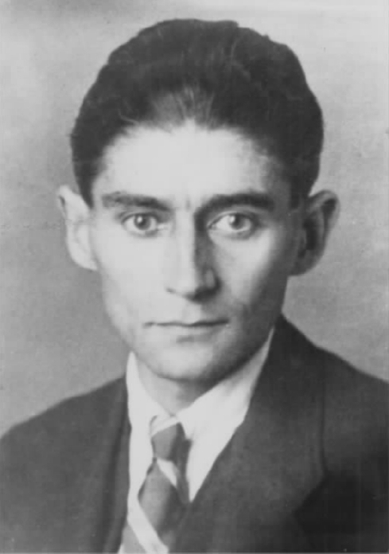
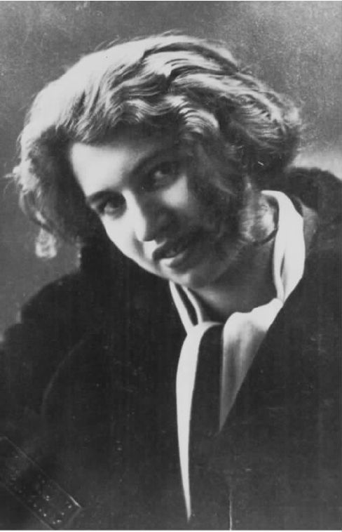
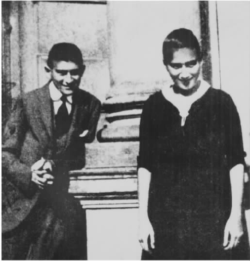

卡夫卡对社会机构有浓厚的兴趣。社会机构是指各种起不同作用的社会组织，如家庭、公司、政府机关、学校、医院、监狱等等。这个词的意思有从笼统向具体转变的倾向，现在尤其指那些号称为了其成员利益，而违背他们的意愿对他们加以限制的机构，例如养老院、精神病院、监狱等。卡夫卡用的词是Anstalt，它的意义一样比较模糊。他用这个词来指他的工作单位Arbeiter-Unfall-Versicherungs-Anstalt für das Kngigreich Bhmen（波希米亚王国工人事故保险事务所）。但是在不同的情况下，它的意思可以是教育部门（Erziehungsanstalt）或者是疯人院（Irrenanstalt）。20世纪后期，社会学家对诸多社会机构，特别是那些对其内部人员控制得最严的机构，予以更多的关注。在其研究精神病院的著作《精神病院》（1961）中，欧文·戈夫曼研究了“绝对机构”中的一种，这类机构设法管制其中入住人员的一切行为。米歇尔·福柯在《规训与惩罚》（1975）中思考了一个问题：诸多关乎正义的机构（尤其是监狱），以及与训练相关的机构（如军队）如何影响、制约被迫进入其中的人。然而，卡夫卡对机构的关注比上述学者更早。他的作品对社会机构做了深入而敏锐的分析，不仅揭露出诸多机构对其中成员肉体和精神上的压迫，而且在后期作品中还探索了一些抵抗和逃避这些机构的可能的方式。
家规
家庭是人人最先面对的机构。对卡夫卡来说，家庭是压迫开始的地方。格列高尔·萨姆莎遭受的家庭压迫从他房间的摆设上就能明白地表现出来：房间有三扇门（格列高尔晚上把它们全部锁上），家里的其他成员——爸爸、妈妈、妹妹——分别会敲其中的一扇，催他起床去上班。卡夫卡的言谈之中，父母之爱是让人窒息的东西，家庭生活犹如战场。“我一向觉得我的爸妈是迫害者。”他1912年这样对菲莉斯说。
八年后，他对密伦娜描述了“陷入这种关爱的圈套里”何其可怕，“你不晓得我写给父亲的信——我就像粘在棍子上的苍蝇那样拼命地挣扎”。但是他也补充说，即便如此，还是有好的方面：“这边有人在拼马拉松，那边却有人在餐厅狼吞虎咽——战神和胜利女神无处不在。”卡夫卡这么说，并非埋怨父母不仁慈或者虐待他。对他来说，难以抵抗的正是父母的亲情所造成的难以摆脱的束缚。在他写的两篇很出色的表现家庭冲突的故事《判决》和《变形记》中，主人公都因为爱他们的父母而下场凄惨。格奥尔格·本德曼确实是个自私、简慢的儿子，根本就不考虑自己结婚后父亲怎么过日子。他嘴上说爱父亲，但这显然是为了阻止父亲问些让他难堪的关于那个俄国朋友的问题，就像他父亲指责的——指责得当然对——是在“替那人隐瞒”。但是，当他按照父亲的“判决”去做，从桥上跳了下去，这时他的身份又回到了一个幼稚的小孩，一个“出色的体操运动员，曾经是爸妈的骄傲”。而他说的最后一句话是：“亲爱的爸爸妈妈，我确实一直都爱你们。”至于格列高尔·萨姆莎，他是个忠诚的儿子，从父亲破产以来一直单枪匹马奋力养家。等他变形之后，终于知道父母曾私藏了些钱，他们其实不需要他那样自我牺牲；家人对他失去了兴趣，不再给他吃的，拿他的房间堆存废品。最后，当格列高尔威胁到他们的经济利益，因为他快把房客吓跑了，他们做出结论——结论缺乏逻辑，这是卡夫卡笔下人物的典型特征：这只甲虫绝不会 是格列高尔。他们的自欺欺人从混乱的代词使用上可以看出来：他的妹妹先是否认“它”会是格列高尔，然后她嚷道“他又到门边来了”。“它”与“他”交替使用否认了格列高尔人的身份，把他变成一堆有生命的垃圾。可是他没有感到气愤：
和格奥尔格一样，他告别了人间，死时心里依然低声下气地爱着家人——那些已经抛弃了他的家人。
卡夫卡一再抱怨成年人设法压制孩子的个性。卡夫卡小时候的一幅照片显示（引用瓦尔特·本雅明的描述就是），他“在一个温室般的环境里，穿着装饰有很多饰带、近乎难受的紧身童装西服”。照片上的小孩子伤心地看着相框外面，显然是想逃离到别的地方，看照片的人不免心有恻隐。也正是这个小孩——本雅明提醒我们注意——后来写出了《唯愿生为红皮肤印第安人》这样的幻想作品。回首从前，卡夫卡承认他是个被惯得很厉害的、难以对付的孩子。但是他的记忆里大多是如何深受各种权威人物之害，这些权威人物包括他的父亲和每天送他上学的仆人——仆人总是每天吓唬他，说要把他的淘气事告诉老师。卡夫卡明白，有许多孩子的遭遇比他倒霉多了。《失踪的人》讲的是一个在美国流浪、基本上少不更事的少年的故事。故事开头就直截了当地介绍“十七岁的卡尔·罗斯曼，他被狠心的父母赶到美国，原因是他被一个女佣勾引后有了个孩子”。卡尔依然爱着他的父母，虽然他们极其残酷地惩罚了他这个受害者。而后面的故事表明，卡尔还曾受到凌辱，因为女佣强迫他和她性交，性交的方式让他觉得“龌龊恶心”，让他感到“极其无助”，最后弄得他“泪流满面”。
卡夫卡激烈地批评当时抚养小孩的方式，其观点与众多开明的教育者颇为一致。他对激进的心理分析研究者奥托·格罗斯的印象尤其深刻。卡夫卡1917年通过布罗德结识格罗斯，他们讨论创办一家期刊，拟取名为《斗争权力意志记录》。格罗斯吸毒，交了很多情人（其中包括后来嫁给D.H.劳伦斯的弗里达·威克利）。他认为传统的家庭是男权的根源，应该发起革命来推翻它。格罗斯这番言论是以亲身经历为基础的：1913年，他的父亲（一位刑法学教授，卡夫卡在大学时听过他的课）把他送到精神病院，理由是他的信条——想爱就爱——证明他已经精神错乱。在公众的强烈抗议下，他后来被放出来。格罗斯对父权的抨击无疑对卡夫卡写《致父亲的信》起到了促进作用。
卡夫卡密切关注教育。他说服菲莉斯去柏林的犹太儿童避难所服务，还给她写了许多封信，对如何对待少年提出建议。1921年，卡夫卡还给他妹妹艾莉写了若干封信谈教养小孩的问题。当时艾莉正打算送十岁的儿子费利克斯上学，卡夫卡建议送他上赫勒劳一所由A.S.尼尔任校长的进步学校。他在信里引述了斯威夫特笔下的小人国里的人们是如何教养小孩的，同时强调并阐发了一个见解：教养孩子这件事，只有在万不得已的情况下才能交给父母来做。他解释道，父母之爱是种自私的表现。家长总是忍不住把自己的愿望强加到儿女身上，按照自己的意愿去影响、约束他们。因此，他们采取的教育方法不外两种：专制和奴役。
小人国的教育
（斯威夫特：《格列佛游记》）
必须让孩子远离“摆设精致的客厅，那里面气氛憋闷，毒害泛滥，让孩子倍感饥渴”。
在卡夫卡看来，家庭也是权力、过失、法律和惩罚的发始之处。《致父亲的信》里描述到，赫尔曼·卡夫卡对什么是行为端正做了严格的规定，他自己却不遵守那些规定。因为这些经历，卡夫卡渐渐地把规则想作权力机制，这套权力机制可以追溯到家庭关系。儿女因为依赖于父母而受到父母之爱的束缚，于是默认了父母的权威，任由他们支配自己弱小的生命，并内化了各种行为标准，然后把这些标准传给自己的后代。默认父母的权威让家庭规则不至遭到破坏，可是默认父母权威这个行为会一直延续到成年后的生活中，继而表现为默认社会机构。马克思主义哲学家路易·阿尔都塞论述过一个观点，不过卡夫卡在他之前早就已经明白：社会权威在很大程度上不是依靠暴力压制，而是在于人们接受各种社会机构，甚至那些给他们带来危害的机构。
审判
一边是家庭规矩，一边是《审判》里侵入约瑟夫·K.个人生活的神秘规则，而介于两者之间、两方面都沾边的是以美国为故事场景的《失踪的人》。小说以一系列审判为脉络安排结构，故事的男主角卡尔·罗斯曼有着良好的用心，可是一再被判有罪。我们已经了解到他是遭到凌辱后被赶到美国去的。在船上，他结交了一个司炉工，司炉工含糊其辞地向他大倒苦水，说船上的轮机工如何不公正地对待他。卡尔急切地想帮司炉工，陪他一起去了船长办公室，没想到在船长办公室里碰到移民过来的舅舅——如今他已经凭着艰苦的努力成为富裕而受人尊敬的参议员。舅舅当场把他认了出来。司炉工的事情要等船长来裁定，情况看起来很不妙：
卡尔提出些无力的抗议，因为他依然认为公道问题可以由思想公道的人客观地做出决断。然而，参议员却将公正和纪律等同起来，而公正和纪律又与船上拥有最高权力的船长的意志等同了起来。
卡尔在舅舅权威的笼罩下度着日子。一天晚上，朋友鲍伦德先生邀请卡尔去他纽约附近的乡村别墅，见见他的女儿克莱拉。舅舅同意他去，但是有点不情愿。他在乡村别墅遇到多起意外事故，不久收到舅舅寄来的一封短信，信里同时夹着一张去旧金山的三等客票。舅舅信里的意思是，卡尔做了件忤逆之事，性质极其严重，他因此永不再理卡尔了。这种冒犯和惩罚模式在卡夫卡的作品中反复出现。一个轻微的过失，其实小得几乎看不出来，或者是根据武断的标准定性的，结果却遭到严厉的惩罚，其严厉程度极其过分。《流放地见闻》里的犯人本是名士兵，他的责任是给军官站岗以及每小时起立对门敬礼，可是他值勤时睡着了，在脸上遭到鞭笞时还胆敢反抗。因为这个罪行，他被折磨致死。乡村医生在冻得要命的冬日，出了门来，兀自喟叹不已：“一旦晚上有人按门铃，你不该应但还是应了的话，绝对不会有好下场。”《敲门》就为上述惩罚观念提供了范例。
敲门
《失踪的人》里面，卡尔的第二次逃跑说明：审判不是要判定谁是罪犯，而是让一个既定的牺牲品永远翻不了案。在西方宾馆当电梯工时，卡尔遇到个很久以前的熟人、流浪汉罗宾逊，当时喝得烂醉如泥。为了扶他回屋睡觉，卡尔只得暂时离开自己的岗位，结果遭到领班的责难。领班出口伤人，说卡尔夜里在外面腐化堕落，罗宾逊的出现就是证明。卡尔所有的解释都被利用，成了指责他的理由，以至于原本支持他的人也觉得他在骗人，于是他又从那里被撵走了。被审判本身就是某人必然有错的证据。
《审判》里有同样的定律在起着作用，但其方式则更微妙。创作该小说的灵感部分来自于他与菲莉斯解除婚约时，菲莉斯和支持她的人们对他的“审判”。小说中并没有实际的庭审程序出现。约瑟夫·K.被捕之后，就被传讯到预审法官面前。未等预审法官质询他，他就开始咆哮，称自己如何无辜。后来，法院把他晾在那里，直到后来他在大教堂里等着一桩业务接洽时，听到教士（后来得知他是监狱神父）突然从小布道坛喊他。教士提醒他小心，说他已经被指有罪。法院即将采取的唯一的行动，就是派刽子手来执行他的死刑。
这些奇幻的事件，可以与卡夫卡所熟悉的实际的法律制度联系起来。卡夫卡生活的那个时代，在法理学家中间存在着两种矛盾的法律观念。其一是严格的源于康德思想的法律哲学，它被德意志帝国（1871）的法典奉若神圣。该法典假定罪犯应对自己的行动负道义责任，因此它只关注所做的行为，然后根据罪行的性质来决定如何施以惩罚（虽然可以根据情况予以减刑）。与之相反，在奥地利法典的定义中，犯罪不仅是行为，还要考虑被告的“犯罪企图”，因此被告的动机在定罪时至关重要。由此形成了奥地利法律中的一条公理，即没有违法行为一样可以有罪：某人可能有犯罪预谋，但是外在偶然事件阻止了犯罪行为的发生。在卡夫卡的小说里，约瑟夫·K.从没有问过，也没有人愿意告诉他，他到底因什么而遭起诉。逮捕他的两个看守说得振振有辞，有人犯罪了，法院就会行动，因此他肯定是犯罪了才会被逮捕：
虽然我们已经了解到K.的诉讼“不是普通法院里的审判”，但是审判他所沿用的法律将奥地利的法律制度推到了极端，且极端得不无滑稽，其中重视的不是罪行而是罪犯其人。当局在乎的不是约瑟夫·K.可能有什么犯罪行为，而是他有罪。因而，有罪这个词的意思从“为某个行为承担责任”变成了“主观的负罪感”。遭起诉似乎意味着成了特殊的人，注定要遭受屈辱，直到最后被处死。
因此，《审判》中的叙事并没有围绕着法院的庭审过程，而是K.对于被捕的反应。抗议归抗议，两个看守说什么，他还是照着做了。因而甚至在他抗议的同时，实际上已经接受了那个他一无所知的法院的权威。他之所以接受，部分原因在于法院就是一个机构，他本能地知道在机构权威面前该如何反应。阿尔都塞提供了一个例子可以说明刚刚提到的接受权威的情形：当我们听到“喂，那谁”之后会马上转身，尽管发话者并没有直呼其名，我们承认了自己就是被叫唤的对象。也就是说，个体置身于一个社会、意识形态系统中，甘受别人的“质问”（阿尔都塞所用的词）。约瑟夫·K.一样也在法院被人质问，而监狱神父把他当成个体而直呼其名“约瑟夫·K.”是之后很久的事了。
法院还利用了K.的不安全感。事实上，我们可以把小说《审判》理解为一系列花招：一方面法院伪善地声称不会干扰K.的生活，却让K.自感有罪，负罪感最终盘踞K.的心间，让他屈服于他的行刑者；另一方面，他辩称自己是无辜的，却不试图去弄清控告他的原因，这或许暗示他内心确实意识到自己的罪责。K.一直尽量压抑法院唤起的负罪感，可是越来越难。在监狱神父面前，K.也争辩说自己无罪，而且谁都没有罪：
故事到这里，“有罪”这个词的意思有了新的变化：从法律上的罪责和主观的负罪感变成有错——不是法律意义上的有错，而是道德，甚至神学意义上的有错，这也是不难想到的。K.的推理逻辑是：人都是软弱的，难免犯错，所以全人类均会犯下过错，凭什么单单逮捕、惩罚他呢？监狱神父的回答不容置疑：凡是有罪的人都这样说，来为自己开脱。言下之意是人人可能都有罪，仍然应该受惩罚。小说的前面，K.已经看到了一幅司法女神的画像：画上的女人脚生双翼，在快速飞行，她看起来更像胜利女神或正在追逐猎物的狩猎女神。法院追逐其牺牲品，毫不留情，恰如卡夫卡1917年的一条格言里描绘的那些猎狗：
法院既善于利用他人，又是更高权力的工具，监狱神父给约瑟夫·K.讲的寓言中至为清楚地表明了这一点。寓言说的是一个人想求见法律，但是守门人不让他进去；临终之时，那个人看到一束光芒从法律身上照射出来，于是问了一个他早就该问的问题：
约瑟夫·K.被捕不仅是他的一大痛苦，而且，如果他事先知道的话，或许还是个机会。那是什么机会？约瑟夫·K.又为何对自己从被捕到审判独独做出如此负面的反应？要想略微搞清楚这些问题，我们需要考虑他是什么类型的人。
部门化的人
和卡夫卡笔下的其他主人公一样，约瑟夫·K.体现了现代工作、商务和政府机构要求和产生出的那类人。要了解卡夫卡的作品中如何描绘工作，我们可以翻回来再看看《变形记》中格列高尔·萨姆莎身为旅行推销员是如何看待自己的工作的：

图9 卡夫卡，1923或1924年。
展示布料样品给潜在的顾客，不仅工作累人，让人难以满意，而且还受到雇主的密切监视。在办公室里，老板坐在办公桌上，高高在上地对手下人发话，手下人说话时则要凑到他身边，因为他的耳朵不好。格列高尔害怕要是称病告假，老板会带着医生亲自上门来，因为老板决不会接受生病的说法，以为肯定是装病逃工。事实上，他没有去车站，结果科长就亲自登门了，而且态度越来越吓人。他先是暗示格列高尔可能盗用现金了，然后警告他：“你在公司里的职位并不是安稳无忧的……过去的一段时间里，你的工作表现让人太不满意了。”
现代人的工作，一如这里所表现的，既抽象又等级森严。格列高尔的工作无关体力劳动，也不是初级生产活动。他的任务是展示样品和收款，因而仅仅是商务过程的一个中间人。公司的等级差别，显示在老板夸张地高坐在办公桌上，员工明显受到密切的监视，行为稍有过错即遭到严厉得可怕的威胁。一个抽象、等级森严的世界要求行动于其中的须是特殊类型的人。格列高尔则属于不幸且不合时宜的那一类，卡夫卡笔下的若干主人公身上都体现了这类人的特征。从格列高尔、格奥尔格·本德曼、约瑟夫·K.、《城堡》里的K.和乡村医生，我们可以提炼出一个现代职业人士的理想模型。他应该如工作要求的那样，有条不紊、精明善算。格列高尔的工作由火车时刻表控制着。因为 5点和7点的火车都错过了，他决心赶8点的火车。他醒来的时候看到时间是6点30分，他妈妈敲门的时候是6点45，他决定7点15分前起床，不料7点10分时科长的到来把他惊醒。约瑟夫·K.每天8点在床上吃早饭，接着在办公室一直工作到晚上9点，然后和那些重要官员们公关活动到11点。甚至他的性生活也成了例行程序：每周去找一次那个“只在床上接待客人”的名叫艾尔莎的女子。格奥尔格·本德曼在算术方面得心应手：他回顾自己的业务额已经增加了五倍，而对他俄国朋友的交易数字那么少表示同情。《城堡》里的K.是位土地测量员，干的尽是抽象的数学计算。
职业人士一般都服务于某个等级叠加的组织。格列高尔在公司里的地位很低，受到科长的欺压。约瑟夫·K.自己就是 一位科长，他告诉预审法官自己的身份时不无自豪。他的傲慢态度，从他被捕后对待受派陪同他去银行的三个下级雇员的态度中就能明显看出。那三个人的地位太低，以至于他都不把他们当同事看待。他们个个让他心烦，其中一个尤甚，原因是他偶然笑起时，龇牙咧嘴导致面部表情整个僵了，那样子“有心肠的人都不忍心去笑话”。平日里，K.一遍又一遍地唤他们去办公室，空耗他们的时间，只是想观察他们的行为举止。然而，对他的上司，K.总是卑躬屈膝；对他的对手——级别和他不相上下的副经理，K.欺骗他，以牟取权力；那些晚上一起活动的官员都是些法官、律师，加上一些纯为陪玩的下级同事。乡村医生并非私人执业医师，而是“由区里聘任”担当“医疗官员”的。K.企图进入城堡里的那个组织，其实，城堡之前召他做土地测量员显然是偶然的差错造成的。他还想越过各级秘书，直接和一个最高官员联系。
男人在这些等级行列中的权威，在他们严整的军容、庞大的身躯和凶蛮的表情中得到了最好的体现。如其身着制服的照片所示，连格列高尔·萨姆莎都当过兵。K.的回忆中，服役的那几年是“快乐的时光”。老本德曼在战争中受过伤，现在身上还留有伤疤，他还没有起身时，殴打儿子的样子仍然像个“巨人”。老萨姆莎精力貌似恢复时，他腰杆笔直、眉毛浓密、身上穿着制服。“靴底奇大无比，让格列高尔大为吃惊”，因为它似乎能把畏缩的甲虫一下踩个稀巴烂。K.那个颇有影响的律师朋友哈斯特勒也有着高大的身材，“这个人身躯庞大，大衣都能把他（指K.）藏起来”。哈斯特勒是位律师，他恐吓对手的本事无人可及：“他的食指还没伸出来，许多人就惊慌得后退了。”《审判》中，我们没有看到一位法官在法庭上出现，K.倒是在辩护律师的厨房里看到一幅画上画了位法官：
不过K.被明确告知，现实里的法官个头矮小，他坐的不是宝座，而是一张盖着马毯子的厨房里用的椅子。他令人望而生畏的外貌是按照传统的画法画出来的。这里暗示了一个意思：权威是一方使弄权力，另一方相应地顺从默认的结果。前面提到的关于法律和守门人的寓言里，守门人同样用他庞大的身躯、毛皮上衣、高鼻子和络腮胡子把那个人着实吓唬了一通。但是，设若这个乡下人对守门人表示怀疑，结果会怎样呢？设若K.挑战法庭的权威，而不是把所有的时间都耗在自己的案子上，从而顺从默认了该权威，那又是什么结果呢？
所有这些可能性都只是假设，因为卡夫卡知道：谁想在一个组织机构内取得成功，他就要接受其中的规则，包括其中的等级制度。于是，一切有违规则的东西都是无法容许的，甚至是难以想象的。约瑟夫·K.就是那些一心维护秩序的职业人士的最好例子。被捕在他自己看来主要是造成混乱无序，所以必须收拾整饬。“可是，一旦恢复了秩序，那些事件的一切痕迹都被抹去了，一切都回到过去的发展路子。”尽管如此，K.脑子里时时还是在琢磨着法院，他按照自己所在单位的样子去设想法院的样子，认为里面也有一大堆官员，旁人摸不清他们的级别组成。他还决定给法院提交一份长篇文件。然而，假如法院提出一些他的个人生活里没有过的事情，譬如提到道德层面的东西，这是他所没有的，那他就琢磨不透了。法庭画师向他描述了审判的三种可能结果：宣判完全无罪，不过这个结果只是传说中有过；暂缓无罪，这样可能马上又要重新逮捕起来；延期宣判，这意味着案件审理一直拖下去，结果是既没有判罪，诉讼也永远完结不了。K.不接受第一种结果，因为他从来就没有想过有这么好的事，所以他冲口而出：“仅仅是传说，我的想法怎么会变呢？”他摆脱不开的倒不是法院，而是自身意识的局限。如此境地在一段格言里有极致的描述：“他的额头骨架宽大，挡住了他的路。他跟自己的额头对撞，撞得鲜血横流。”我们或者可以拿他与乡村医生做比较：乡村医生陷于自己的日常琐事，结果猪圈里突然不知道是从天上还是地下冒出几匹马，载着他一眨眼就到了病人家时，他一开始竟然还看不出病人身上巨大的伤口在哪里，还是马嘶声让他察觉到伤口。
卡夫卡笔下的人物因身处某组织、机构而形成相应的习惯思维，惯于日常俗务致使他们认识不到现实中有悖他们习惯思维的事情。但是，卡夫卡的叙事一再显示：这些难以调和的现实情形强行突破了诸多不善领悟的主人公的心理防线，让他们为之困扰，为之心力消磨，最终毁了他们。格奥尔格·本德曼被恢复了神气的父亲逼得像个无助的小孩；乡村医生最终落得赤身裸体，受着雪寒；约瑟夫·K.的崩溃则是个漫长、乏味、微妙的过程，其中包括否定自己的问题，苦心寻求与人（他的女房东、布尔斯特纳小姐和监狱神父等）建立友好团结关系，以及在职业常规所赋予的“护身钢甲”被戳破后显露出贪婪性欲。他要寻求别人的支持，这在他对监狱神父说的话中表现得再明确不过：他跟绝大多数法院官员不一样，他觉得能信任他，跟他能敞开了说话。监狱神父回答约瑟夫·K.的话时谈起法律和守门人的寓言，其实是在含蓄地告诫他不能依赖别人——如同乡下人依赖守门人那样，而是要自己去做决定。类似地，辩护律师也告诉K.：法庭打算取消辩护律师，“被告必须自己想办法”。
卡夫卡表现现代职业人士的优点和弱点的方式，与当时社会学家马克斯·韦伯对现代职业人士的分析很接近。韦伯对“资本主义精神”的起源做了探究，认为其中包括谨慎、理性、长期的计划，而不是仓促的积累或鲁莽的投机。他在这种观念与早期新教所灌输的行为方式之间找到了“有选择的亲缘关系”，因为当时新教排斥一切不可思议的拯救方式，恳求信徒们努力工作，在他们心里埋下希望：现世的成功将证明上帝的恩泽。
然而，韦伯担心，如此模式下的自我正在被改造成“官僚化的人”，依赖于一个外在提供的秩序，而不能独立自主地、有原则地做出决定。这一说法适用于约瑟夫·K.。他全身心地投入到工作中，疏远了自己的家人（他没有去看望自己的母亲，顾不上在同一个城里上学的侄女），没有文娱活动，就是性爱也限制到了符合健康卫生原则的每周一次；对所有不熟悉的东西都缺乏心理准备，因而不善做出反应，而一旦做出反应，所采用的尽是那些曾在单位里给他带来职业成功的行为方式。
韦伯论职业人士
马克斯·韦伯：《经济与社会：解释社会学纲要》，
冈瑟·罗思、克劳斯·威蒂克编
（纽约：贝德敏斯特出版社，1968），第556页
韦伯是研究官僚体制的理论家，卡夫卡则是官僚体制的嘲讽者。据韦伯分析，官僚体制要求的是等级化组织，其中每个官员的任务、职责有明确的分工。所有职责，必须按照既定的规则执行，执行时不带个人情绪，不问官员的个人性格（所以必须排除腐败和裙带关系），而且要记录在案。按规则行事，意味着官僚机构的工作必须安排得可靠而且能够预知。粗糙马虎、难于处理的地方，必须代之以深奥、抽象的东西。小说《城堡》里对这样理想的官僚机构加以讽刺，小说里庞杂而且看上去完美无瑕的机构，却有着让其中的官员脱离现实生活的作用。如果有谁打电话给城堡，真正能有官员接电话的可能性微乎其微，即使接了，也纯粹是玩笑地拿起听筒而已；听到的蜂鸣音表明城堡里面 电话永远在忙，这证明了城堡与外面世界互相隔绝。官员们永远是精疲力竭的，他们睡在办公室里，以勾引村里的姑娘们为乐。他们处理不了的，是各个来办事的人的具体现实情况。因此，他们所有的努力，都是为了阻止来办事的人与有能力处理他的事情的人联系上，就像克拉姆的秘书布吉尔给K.解释的那样：
布吉尔又说道：当本来不可能的事情发生了，当来咨询办事的人碰巧遇到一个有能力的官员，官员真的会开心得了不得，来办事的人想要什么他绝对会给什么。但是，就这样也无损于官僚机构。现在来办事的是K.，他好不容易才找到布吉尔的房间（这还是误打误撞地碰进来的），所以就在布吉尔给他解释情况时，他已经累得睡着了，根本没有意识到他碰到了一个确实可以帮他的官员。等K.醒过来时，布吉尔兀自一个人说个不停：“当然，有些机会好像太好了，结果没法利用；有的事情仅仅因为自身原因而实现不了。”这里，官僚体制不仅是讽刺的对象，还是一个更重要的问题的暗喻——暗喻人们试图与超出人类生活范围之外的一切所在交往、接触。
卡夫卡对官僚体制的描绘，抓住了现代社会机构的另一个特征：它们的管理者是看不见的。现代社会之前的机构靠仪式来确立其权威。J.H.赫伊津哈在谈到中世纪时这样写道：“生活中不论有何事情，大家都知道，这是让人自豪的事，但也很残酷。”即便是惩罚，也是在肃穆的公众仪式上进行，杀人凶手穿过人群，登上绞刑架，在劝告下忏悔一番以教育观众。卡夫卡的小说里，机构的领导是各种经理和主任。传统意义上的管理者不过是无用的傀儡，例如《往事一页》中的皇帝，他无法将侵犯自己城市的游牧民赶出去，只好无奈地从宫殿的窗户看着他们。《城堡》里，威斯特威斯特伯爵只是名义上的统治者。伯爵的旗子在城垛上飘扬，但是他从来没有露过面，而其中的干事，尤其是克拉姆，享受着之前只有皇室才能得到的那种迷信般的尊敬。
同样，惩罚也退入到私人空间里进行。《审判》里有个片段最是恐怖，逮捕K.的两个看守——之前K.曾向预审法官投诉他们行为不端——出现在K.的银行的旧物堆存室里，一个身着皮衣的男人正用鞭子抽打他们，惩罚他们的不端行为。这一幕暗含有同性恋间施虐的色彩，它证明惩罚是K.无意识欲望的间接实现。在意识层面，K.对如此明显的极度残酷的惩罚感到震惊，想出钱让那人别打了，可是没有成功，最后那人“砰”的一声把门关上，不顾被打的人的死活自己走了。被打的人高声哀嚎，那声音“不像是人发出来的，倒像是被折磨的乐器发出来的”。这里所揭露的暴力——它是法院权威的基础——为最后一章的情节埋下了伏笔。小说的最后一章里，K.被杀手带到遥远的采石场，一把刀拧着捅进了他的心脏。
卡夫卡明白，在现代文明世界里，暴力被赶到了警察局的密室与监狱里，或者距离欧洲很远的殖民地里。故事《流放地见闻》与《审判》里的鞭笞片段几乎写于同时，一个从未走出过欧洲的人能在故事里对殖民统治和暴力有如此深刻的描绘，着实让人惊叹。卡夫卡的这个故事不亚于康拉德的《黑暗的中心》，而康拉德写《黑暗的中心》的基础，是他对发生在比利时统治之下的刚果殖民地上的剥削压榨有第一手的了解。卡夫卡的一个舅舅名叫约瑟夫·略维，1891年到1902年期间曾在刚果工作过，负责管理一条强迫劳工修筑的铁路。卡夫卡的笔记里曾有只言片语提到“在刚果中部修筑铁路”，看来是源于舅舅的经历。舅舅的那段经历还被他融合成为《流放地见闻》中德莱弗斯上尉遭遇不公、被囚禁在法属流放地魔鬼岛的那一节故事。卡夫卡也应该通过报纸新闻对德国殖民当局种族灭绝式的镇压西南非洲（今天的纳米比亚）的赫雷罗人起义有所了解。《流放地见闻》的故事发生在一片殖民地上，那里的人们讲法语，一位军官带着一个欧洲旅行者参观一台惩罚用的“机器”（这个词的意思不仅指实体的机器，还指统治工具）。犯人被投进机器里面，之后的十二个小时里，机器上安的很多针扎进他的皮肤——他的罪行就这样刺在了皮肤上，直到最后犯人死去。对犯人的判决不会告诉他，他会“从身体上”知道。保罗·彼得斯曾指出，“从身体上”这个词组在德国人讨论如何处理侥幸活命的赫雷罗人时也经常用到：这些侥幸活命的人将“从身体上”感受他们反叛的后果。《流放地见闻》中，犯人因为一点轻微的渎职，脸上吃了马鞭子；1894年，社会主义者的领袖奥古斯特·贝贝尔向德意志国民议会展示了德属殖民地里打人用的河马皮做的鞭子——尽管官员们否认曾经用过，但还是让议会倍感震惊。故事里的军官坚持穿着厚重的制服，因为它是祖国的象征，这是殖民思维的另一特征。类似地，19世纪在印度的那些英国殖民地管理者们，就是在四十度的高温下还坚持穿着闷热的欧式服装，甚至每天晚餐时都穿着晚礼服，从而象征性地保持着与祖国的联系。
在卡夫卡笔下的流放地，压迫或许能在性质上有所改变，但是消除压迫似乎不太可能。在过去，各种惩罚都在众目睽睽之下。可是现在，惩罚人的时候都羞愧地在遥远的山谷里进行。前任司令官虽然已经死了，但是现在的军官不折不扣地奉行着他的极权主义传统，现任司令官没有勇气废除那些非人道的惩罚，而是忙着技术改良（扩建港口）。转机的唯一迹象只在旅行者身上，这个故事就是从他的角度讲述的。虽然军官极力劝他支持传统的惩罚方式，旅行者先是提出种种理由（诸如他是个外国人，不应该多管闲事，文化相对主义表明不能在热带地区使用欧洲标准等等），但是最后还是定下心坚决地说：“不。”有了一颗勇敢的心和开明的胸怀，按理会有不同的结果。
故事中的惩罚机器残酷得病态，这引出关于卡夫卡的任何讨论都无法回避的问题：他的作品是否从某种意义上预见到了第三帝国以及20世纪中叶的残酷？简单化地理解，问题的答案显然是否定的。卡夫卡无法预知未来。但是，他对于权力、权威和暴力等机制的深入洞察，让我们不愿意把这个问题彻底打发掉。至少部分答案是——正如上文所示——卡夫卡对他那个时代的社会机构的运作有着卓异的认识。他让人们看到：各机构会为了其特殊目的宣扬一套价值观，工作于某机构中的人，对于超越其外的价值观，忽略起来是何其容易。卡夫卡这一看法不仅从约瑟夫·K.身上得到说明，《城堡》里挥鞭子打人的那位说的话也能说明：“我是受派来鞭打你的，所以我才打你。”纳粹集中营里的工人们后来宣称他们只是在完成分配给自己的工作，工人的说法已经了无新意，他们纯粹是在贯彻卡夫卡已经探讨过的机构逻辑而已。
不仅如此，就像欧文·戈夫曼揭示的那样：不论各社会机构的目的是好是坏，它们的结构都是相似的。监狱、修道院、收容所、营所等都是绝对的组织。任何人一进入某个绝对的组织，就立即受到戈夫曼所说的种种形式的“屈辱”。从身体上来说，他脱离了外面的世界以及他在外部世界所扮演的角色，扮演该角色所赢得的尊重也没有了。他失去部分或者全部之所有，必须穿上该机构的服装。他要么以新的名头，要么以过分熟悉的个人面目与人交往。他必须敬重同僚，且敬重不仅表现在言语之间，还表现在身体的姿态上；必须经受无端的侮辱；必须自甘委屈，让自己的生活经历——尤其是那些不光彩的地方——统统让别人知道。面对有权势的人的虐待，他无能为力。约瑟夫·K.被捕后，刚刚说的不少事情都发生在他身上了。一位看守闯进他的卧室；人家把他支来唤去，嘲笑他，朝着他大嚷大叫。看守冲过来顶住他，于是他的身体空间被侵犯；他的内衣被没收，并被告知以后必须穿破旧些的睡衣；看守命令他穿上一件黑外套去见监察官；他还受到街对面几家邻居的监视。连社会地位没有他高的人，受到如此对待也会苦恼不堪。K.星期天去法院办公室时，碰到几个被告在等候。审判的长期后果从他们的身上就可以看出来：虽然他们都是中产阶级和上层社会人士，但是他们都穿得破破烂烂的；当他们站起来朝法庭的引导员敬礼时，站的时候统统都弯着腰屈着膝，形同街上的乞丐。我们可以设想：即使没有肉体上的虐待，单单审判中的道德压力就已经把他们整垮了。因为有自己的家庭做模板，卡夫卡对社会机构有清楚的了解，这让他能揭露出压迫与服从的若干模式。这些模式说到底都是以暴力为基础，一定程度上存在于所有的机构中，而且愈是绝对的机构，对暴力的依赖愈强。真正以帮助人为目的的社会机构（譬如医院），与那些以毁灭人为目的的组织机构（譬如集中营、死亡营）相比，两者有着极大的差别。介于二者之间，还有很多种机构，它们要么是以训练人为目的（比如学校、军队），要么纯粹以防止人们影响社会为目的。但是卡夫卡的作品显示：所有这些机构在结构上没有区别。确实，人们自愿进入的机构（譬如K.的办公室）的实际性质，在诸如《审判》中的法院之类的压迫性机构的等级结构里有显著反映。
这些听起来让人至为悲观。仿佛权力及其恶果无处不在。“这边有人在拼马拉松，那边却有人在餐厅狼吞虎咽——战神和胜利女神无处不在。”但是卡夫卡笔下的世界图景绝非一片惨淡。各种社会机构有一个特点最让人沮丧，那就是：它们有权威是因为其中的成员默许该权威。正如依赖父母爱护、抚养的小孩们毫不犹豫地接受了父母的控制并内化了他们的行为标准，成人们同样地也在内心里默许所在机构的权威，甚至于默许那些有损他们利益的机构的权威。由于这一事实，这些机构似乎牢不可破，但是这个事实也孕育着希望。理由是，如果人们不再默许权威，从理论上讲——起码是在理论上——他们就剥夺了机构的权威，当然在实践上要难得多。卡夫卡曾有几句格言谈到阿特拉斯——希腊神话里用肩膀扛着世界的巨人：“阿特拉斯曾经想，如果他愿意，他可以把地球放下来，然后悄悄溜走。但是，他也只能这么想想罢了。”也就是说，阿特拉斯只能在脑子里有自由的想法，这些想法绝不会对他的生活有什么实际影响。其实，即使是在卡夫卡早期的作品里，权威看起来也并非铜墙铁壁。给格奥尔格下了判决后，老本德曼跌倒在床上，仿佛他刚刚获得的力量一旦用到自家儿子身上，瞬间就消失了。在守门人与法律的寓言里，守门人的强大有力仅仅表现在他的一面之辞“我很强大”，他让人望而生畏的相貌，以及一个无法证实的说法：往里面进，还有很多守门人。乡下人默许这些站不住脚的权威，结果浪费了自己的生命，丧失了面见法律的机会。不仅如此，如果我们仔细地读文本（训练有素的律师工作时都应该如此）的话，我们可以发现，守门人给了一个自相矛盾的指令：“我是在阻拦你，但你要是很想进去，那就进去吧。”那意思差不多就是“不用听我的”，因此让乡下人陷入一个进退两难的境地。卡夫卡1917－1918年写的一段格言中描述了一个不同的两难情境：
这里没有权威，而不要权威，是人们自己决定的结果。不过，人们还是努力活着，似乎头上依然有权威存在，尽管他们的生活痛苦而无意义。
《城堡》为避免上述两难境地指出了一点希望。K.来自那个封闭社会之外，那个让全村屈服于城堡及其官员的权威体系，K.不是其中的一分子。村民们对他表示怀疑，那些小有权威的人，比如老师和房东，则讥讽他不懂当地的规矩和习俗。K.违反当地传统之举中最恶劣的一桩是他要求直接和克拉姆对话。对于村民来说，尤其是那些与克拉姆有过短暂性关系的妇女们，这样的高官是不能随便接近的，甚至于他的名字都不能随便叫。然而，在K.的诱导下，他们承认见见克拉姆，即使没有先例，起码是可能的。因此，K.这个外来人是在挑战、违抗城堡的传统秩序。麻烦在于，挑战城堡权威的过程中，他也把自己纳入城堡的权威结构了。所以，关键不是在于去挑战权威，而在于不理会它。于是，《城堡》的一大部分情节里面，K.都是在两种冲动之间挣扎：要么不服从城堡，突破其官僚体系的障碍，直接和高官对话；要么不理会城堡，避开它，与村里姑娘弗里达安家过日子。他对城堡怀有敌意，这也是他对城堡念念不忘的表现。为了追求那个让他念念不忘的东西，他抛下弗里达，与巴纳巴斯的家人度过了好几个钟头——他希图通过巴纳巴斯这个传信的能够达到目标，听听“城堡逸事”。其中许多逸事与小说中一个最有争议的片段有关：巴纳巴斯的妹妹阿玛丽亚收到一封信，信中言辞鄙俗。写信人是城堡官员索尔蒂尼，目的是叫她去陪他睡觉。村里的绝大多数姑娘会觉得有权的男人如此恩赐是一种荣誉，可是阿玛丽亚不同，她拒绝了。从此以后，她的家人就受到村民们的排斥，进而相信自己已经失宠于城堡了。他们在路边苦苦守候，希望能碰上哪个官员正好路过，然后向他乞求饶恕。阿玛丽亚的姐姐奥尔加与城堡的侍从在马厩里过了一夜又一夜，当他们的性玩物，希望他们好歹能说上一两句话，能对一家人争取恢复地位有那么一丁点儿帮助。在此期间，阿玛丽亚变得冷漠、孤僻。父母因为伤心家门耻辱，落得未老先衰，阿玛丽亚现在一心只顾着照顾父母。可是尽管如此，其实没有任何迹象显示城堡做过什么事情去伤害他们家，或者对阿玛丽亚违抗城堡有什么具体的不满。这一家人迷信城堡的权威，充当了自己迷信行为的受害者。迷信城堡权威的破坏性后果，从奥尔加肉体上出卖自己以及阿玛丽亚情感上变得孤独离群可见一斑。阿玛丽亚抗拒索尔蒂尼占有她，这确实算得上一个有尊严的自我肯定之举。但是，要是她反抗权威却导致她身陷于权力结构中逃脱不了的话，她的反抗就枉费了。一如尼采笔下的查拉图斯特拉所云：“和龙斗争的人，自己也变成了龙。”
自由？
人们如何避开权力结构的影响呢？卡夫卡笔下的多个人物找到了短暂的和说不清道不明的自由。格列高尔变成甲虫后自己困在房间里不出来，不无讽刺的是，这倒可以让他避免了经济和社会压力。布采法卢斯博士在书房里静静地阅读法律书籍，借此回避了历史。《致科学院的报告》中的猿猴，一旦被抓获，就决不再期望享有任何“崇高的自由感”，而安心地在杂耍剧场里表演“以求出路”。《城堡》的第八章里面，K.把克拉姆挡在了雪橇外面，不让他进去，从而维护了自己的权利，结果却发现自己一个人被孤单单地丢在满地堆雪的院落里，自由是自由，可是已经空无意义了：“没有什么比这样的自由，这样的等待，这样无人能够侵害更无意义、更令人绝望了。”
卡夫卡想象中真正的不受权力束缚的自由，不是像K.那样去正面对抗权威，而是从权威边上悄悄走开。早在1911年，卡夫卡在日记里做了些少数族裔文学方面的笔记，这些笔记的灵感来自他对当时的意地绪文学和捷克文学的一定了解，日记为上文所述的自由提供了一个范例。少数族裔文学与德国文学这样的主流文学相反，它不是由某一个伟大作家（例如德国文学里的歌德）的权威所主导，因此，它为热烈的讨论和广泛的参与到文学生活留下很大余地。维系这样的文学，靠的是民族情感。少数族裔文学是“民族的日记”，是民族记忆的宝库。它既有政治化的一面，又保留了足够的自主性，从而能不受政治的破坏。它为那些小有才气的人写一些小题材提供了空间。这些文学笔记近年来吸引了许多人的注意，因为它们借哈布斯堡帝国由于民族主义矛盾而分裂为例，预示了殖民和后殖民格局。在这个格局下，新的文学不惧怕大都会的文化权威，同时又运用某种版本的大都会语言（例如印度或非洲作家用独特的英语形式创作），力图确立自己的地位。卡夫卡想象能有这样一个社会：这里的人们不会像他的家人对他那样，把对文学的专注视为性情古怪的标志，而是把对文学的热爱遍及国之全民；在这里，伟大作家的权威不会像歌德那样阻碍文学的进一步发展——因为在卡夫卡看来，歌德挡住了德国文学的发展道路。
这些关于少数族裔文学的笔记间接地提出了一个民主社会的设想。卡夫卡在多大程度上是从具体的政治角度思考的呢？还是个小学童的时候，他赞同社会主义，喜欢在纽扣眼里插一支红色康乃馨。英国与南非布尔人的战争（一次不对等的冲突，在当代被视为帝国主义恃强凌弱的绝佳例子）中，卡夫卡支持布尔人一方。1910年前后，他常阅读《时代报》——上面刊登的文章表达了托马斯·马萨里克（后来当上捷克斯洛伐克共和国的第一任总统）的见解，还参加了马萨里克的捷克人民党和其他捷克政治团体举行的集会。有传言说他参加过无政府主义者的集会，不过看来并不属实，而是把他与另外一个名字也叫卡夫卡的人搞混了。
卡夫卡的社会良心有翔实记载。据布罗德说，卡夫卡看到工人们因为机器不安全而受伤后说：“这些人太温和了！他们不是闯进事务所，见什么就砸个稀巴烂，而是进来提出请求。”有好几年，卡夫卡很不情愿地被卷入他妹夫开办的石棉工厂的事务中。他在日记里评论道，工厂里的女工因为机械的工作变得都不像人了（见方框内引文）。
卡夫卡描述工厂工人
《失踪的人》里讲到美国正在用最新的技术对人进行严格和机械化的管理。在那套管理模式下，人的身体受到强化训练以达到最高效率。大家不能互相寒暄问候，从而完全破坏了人们之间的亲密团结关系。书里讲到卡尔本要去拜访鲍伦德的乡村别墅，但因为金属制造工人们的罢工示威阻碍了行程；还说到建筑工人们也在罢工；卡尔和一些流浪汉和妓女混在一起，在那个下层社会里越陷越深。然而，卡夫卡接触得最多的政治集团是犹太复国运动。当然，此时的犹太复国运动的目标不是占据近东领土（早期的犹太复国运动者曾乐观得近乎天真，以为阿拉伯人会欢迎他们在那里定居），而是帮助犹太人离开反犹情绪日益高涨的欧洲，并在平等、真诚和体力劳动的基础上建立犹太人社区。他曾谈到要和朵拉·笛亚芒一起移民巴勒斯坦，在那里做个图书装订工，或者在一家餐馆当个服务员，朵拉当厨师。然而，卡夫卡设想的不是犹太复国运动的实际细节，他是把犹太复国运动与新型社会群体联系起来。他在后来的小说中——最突出的是那篇对艺人的社会角色持讽刺态度的《女歌手约瑟芬妮，或耗子民族》——对该新型社会群体有想象性的描画。约瑟芬妮是只会唱歌的耗子，她极度相信自己的歌唱艺术，以为歌唱能为她赢得社会特权。但是在别的老鼠眼里，她的艺术根本没什么了不起，因为她唱歌的样子就不是唱歌，而是和其他老鼠一样吱吱叫。可是，人们还是蜂拥而至来看她的演出，这当然并非因为她的吱吱叫或者吹口哨般的演唱有什么艺术价值，而是因为它象征着他们的民族身份，从而能增强他们的亲密团结关系：
《女歌手约瑟芬妮，或耗子民族》不是谈犹太复国运动，也不能把里面的老鼠明确看成是犹太人，虽然里面带有些许暗示。故事反复用到Volk（人民）这个词，借此提出一种社会群体观。Volk一词在德语里带有“以亲属关系为基础建立的高度亲密团结的关系”的含义，甚至有Volksgenosse（同志）的含义。Volksgenosse在1924年时尚无不良意义，但是之后由于被右翼意识形态理论者滥用而坏了名声。卡夫卡也使用这个词，但并不能因此就把他归为右翼人士，而是说明，他作品里时常表现出的对社会团结的憧憬，相对历来的左右翼之间的政治对立，显得颇不合实际。
《城堡》对社会的怀疑主义态度更甚。虽然村民们在K.那样的外来人面前是一副联合阵线的样子，其内部则是派系分立，一有人稍微违背传统习俗，譬如巴纳巴斯一家，就立即被排斥在外。对城堡——他们头上的封建大地主的府邸——及其官僚体系的代表，村民们既服从权威又屈服于权威。文本中对该双重关系提供的出路是婚姻。K.到达村庄的第二天就对桥头客栈的服务员弗里达产生了兴趣，和她一起过夜，接着对别人称她是自己的未婚妻。但是，这里面有个明显的危险存在：和弗里达结婚只会让熟悉的权力结构再生，即丈夫掌权，妻子默许他的权力，受他支配。卡夫卡已经在自己家里，在家庭这个社会最基本的机构里体验了该权力结构。按照卡夫卡日记和书信里的描述，他父亲说话是典型地叫来嚷去，母亲则是“嗫嚅啜泣”。然而，卡夫卡在生之年，女性获得独立及发挥自己潜力的机会已经明显地增加。20世纪的前十年里，德国许多州的大学已经逐渐允许招录女生，其中最迟的普鲁士也于1909年招录女大学生。在奥地利，维也纳大学的艺术系1897年开始聘任女老师，医学系1900年开始招收女生。越来越多的女性开始在外面工作。卡夫卡的女性朋友是新女性的代表。菲莉斯一开始工作时是速记打字员，不到四年就当上公司的科长（约瑟夫·K.的位置）。菲莉斯的朋友格里特·布洛赫，就是有段时间曾在卡夫卡和菲莉斯之间说和、调停的那位，她的职业生涯与菲莉斯相似，甚至比她更成功。密伦娜·耶申斯卡是位名记者。卡夫卡最喜欢的妹妹奥特拉经营过乡村农庄，后来上了农业学院。
这些类型的女性在卡夫卡的小说里也有。《审判》中的布尔斯特纳小姐在一家律师事务所工作，她是个独立的职业女性。她的女房东和老派的约瑟夫·K.都怀疑她性生活不检点，很容易就能交上她。她抗拒K.的骚扰，这使她与巴结K.的那些妓女般主动诱惑的女人形成对比。例如法院雇工的妻子对K.说话时极具挑逗性：“你想和我做什么都可以”；又如女管家莱妮，K.和人讨论诉讼问题时她诱得他停止讨论。这样一来，《审判》里出现了一个人们熟悉的二元对立模式——贞洁女人对好色女人。不过《城堡》在刻画女性形象时比较注意将不同的人区别对待。《城堡》写到了一大批非常出色的女性角色，不仅反映出女性能拥有大量机会，也反映了卡夫卡生活的那个年代里妇女的形象。

图10 朵拉·笛亚芒。
《城堡》里代表新型女性的是个不太招人喜欢的教师吉莎。她态度傲慢，目光锐利，支配着情人施瓦泽。施瓦泽则是个软骨头，和她在一起时就帮她改学生作业。然而吉莎其实并不想和他谈恋爱，她觉得让猫陪着躺在沙发上舒展肢体是最开心不过的了。
较为传统的女性角色的代表是桥头客栈的老板娘加德娜，她对比她年纪稍小的丈夫不满意，很重要的原因是她十八年前与克拉姆有过短暂的关系，这段关系她至今仍念念不忘。对克拉姆的衷情反映出她心中有种浪漫情结，这一情结简直毁了她现在的生活，所以K.苦口婆心地劝她忘记它了事。伊丽莎白·布厄从女性主义角度解读了卡夫卡的作品，认为老板娘心中的浪漫渴望是一个卡子，它让女性陷在村庄的男权秩序及其二级系统——家庭内的女权秩序——之中解脱不了。实际情况是，这样的浪漫渴望似乎成了她接受日常生活的障碍。这个出现在女性身上的问题，与K.满脑子想的都是城堡而对他有破坏性后果，情形很相似。奥尔加与城堡侍从胡乱性交，阿玛丽亚照顾着年迈和日益衰弱的父母，同样是出于强迫观念。

图11 卡夫卡和他的妹妹奥特拉，1914年。
最后，我们再看看与K.有过短暂婚约的弗里达。卡夫卡记述二人关系的方式最像通常小说中描述婚姻的方式。这里所想象的婚姻，颇具现代婚姻关系的特征：位于两个平等的人之间，既紧张又有挑战性；它犹如一个心理测验场，许多参加测试的人都无法过关，包括K.和弗里达。这是个新的婚姻观念。较老的婚姻观念里，夫妻分工（包括职业上的和家庭里的）各自不同，这个观念在《包法利夫人》、《米德尔马奇》等19世纪的小说里依然大行其道。《包法利夫人》里，艾玛的丈夫没有生气，生活里机会有限，为此她感到厌烦不已。《米德尔马奇》里，多萝西娅给丈夫当抄写员，个人愿望无法实现，因此感到灰心沮丧。最早在作品里表现比较激进的婚姻观念的是易卜生，他的剧作颠覆了传统的男性形象特征，把男人描画成软弱、自私、自欺欺人的人，并把关注的重点转到女性以及她们对婚姻关系的不满上面。《玩偶之家》、《海达·高布乐》以及震撼人心的婚姻剧《小艾尔夫》表明：在婚姻舞台上，勇敢面对情感分歧的结果，要么是毁了婚姻，要么会经过一场危机，然后建立新的关系。易卜生的同时代人、作家斯特林堡——卡夫卡极为崇拜他的作品——也在自传、小说和戏剧里把婚姻形容为战场，女人在其中占着上风。在易卜生、斯特林堡，还有稍后的D.H.劳伦斯的作品里，婚姻取代了游侠浪漫故事里的冒险及19世纪小说里的工作，成为故事情节冲突中人物发展的背景。
书中对弗里达与K.之间关系的描写，不乏尖刻、辛辣之味，这在卡夫卡的作品中并不多见。K.一开始确实想要通过弗里达接近克拉姆，后来却发现自己因为她本人而不是别的原因不知不觉地爱上了她。卡夫卡用大段的抒情文字——与之前作品不同的全新的笔触——叙述两人爱情发展、冷却的过程。出人意料的是，这第一段文字出现在K.与弗里达两人发生性行为的时候。刚开始时弗里达的样子像新版的吸血鬼式的妖妇。她挥舞着鞭子，有点卡夫卡前期故事里那些女人的吓人味道（不过，她挥舞鞭子是为了控制城堡的几个禽兽侍从，他们当时正把奥尔加往马厩里拉），然后和《审判》里的莱妮一样，把K.拽到了地上。虽然他们交欢的场地有点恶心，是在脏兮兮的酒吧地板上，可是一番云雨却使K.的心思不至于全部放在跟城堡对抗上面，破除了他男人的防线，密切了他与弗里达的关系。文中一再重复说到“像一个”，突出了这次云雨的作用：
虽然K.与弗里达之间的关系没有持续多久，其中的各个片段——从相遇、在教室里同居、争吵到互相疏远——合起来犹如一篇讲述一段婚姻如何开始、如何破裂的简短叙事嵌于小说之中。描写两人关系的文字中表达出诸多感受，这表明卡夫卡既在反思自己的经验，又彻底地领会了斯特林堡对婚姻的种种描绘。弗里达的爱自然而然，所以她会把K.藏起来不让房东老板看到，而且在女房东对K.表示不满时为他辩护。但是她的爱里也有着极有害的、限制性的因素，这在她想象着和K.同寝一墓时显而易见：
而描写K.时，两人为婚姻争吵的过程中他的烦躁和以自我为中心都很巧妙地传达出来。弗里达开始责备他，她哀怨的声音没有感动他，倒让他心烦起来，“甚至觉得她含泪哀怨的声音不是感人，而是烦人”。后来有一次，弗里达告诉K.，她是多么需要他，少不了他。K.没有理会她动人的恳求，却提起了克拉姆：
两人的婚姻关系最终破裂了，弗里达占有欲强也许是个原因，但K.的自私肯定是个原因。婚姻作为两个抛开一己之私念的人之间建立的伴侣关系，现在看起来是个乌托邦，且这个乌托邦的模样只是在失败的时刻方得一瞥。但是，不管该乌托邦多么不可靠，在卡夫卡的作品里，它代表着一种理想的尝试。这个理想一反他所熟知的家庭模式，是新型社会，一个不以权威和屈从为基础的社会的潜在核心。